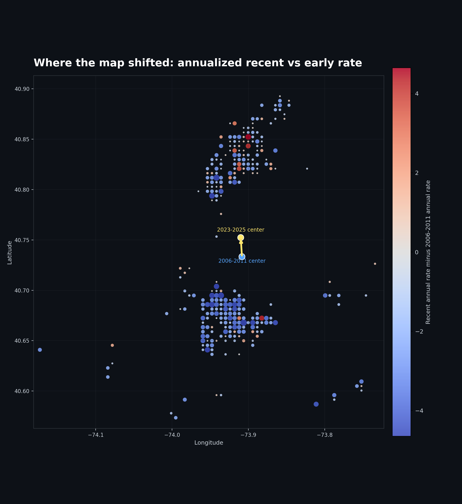
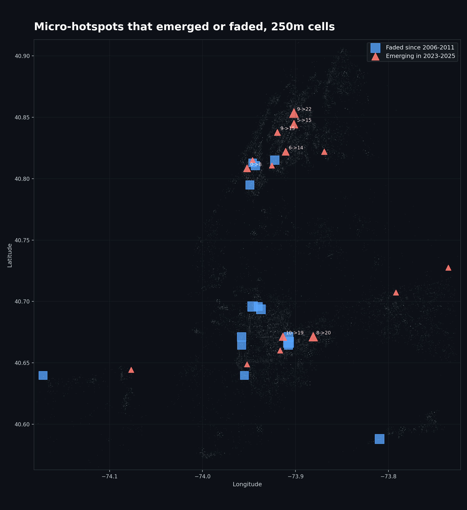
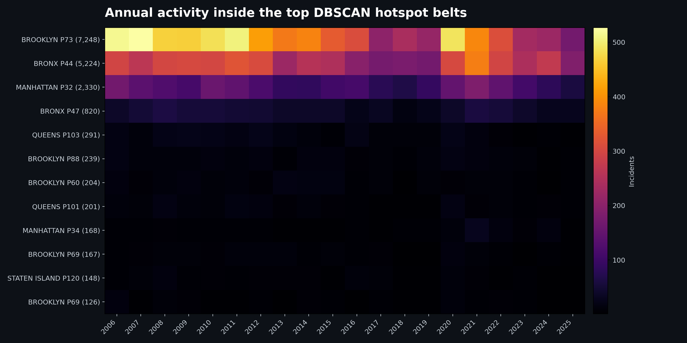
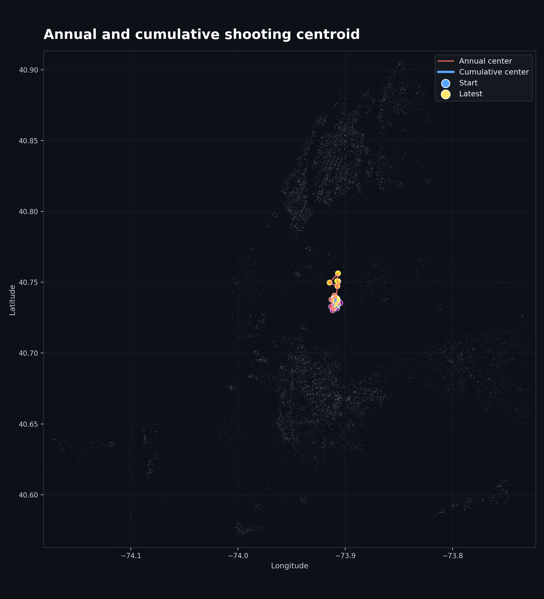
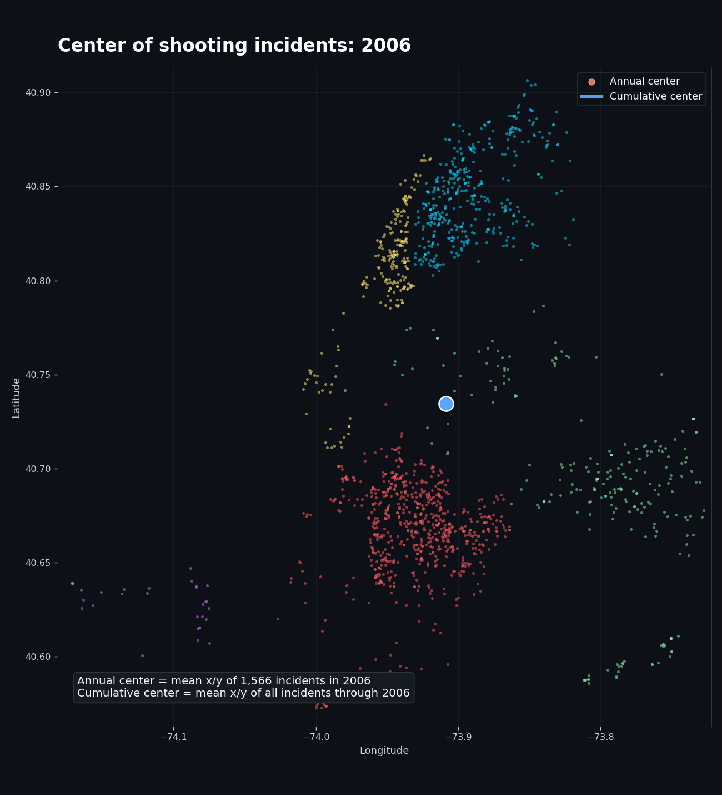
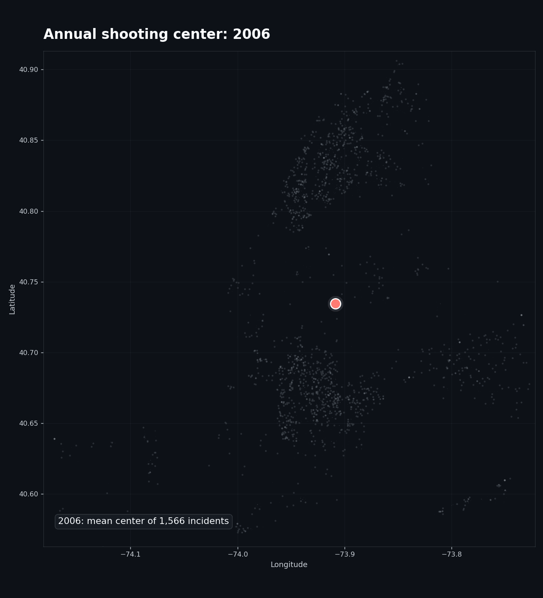
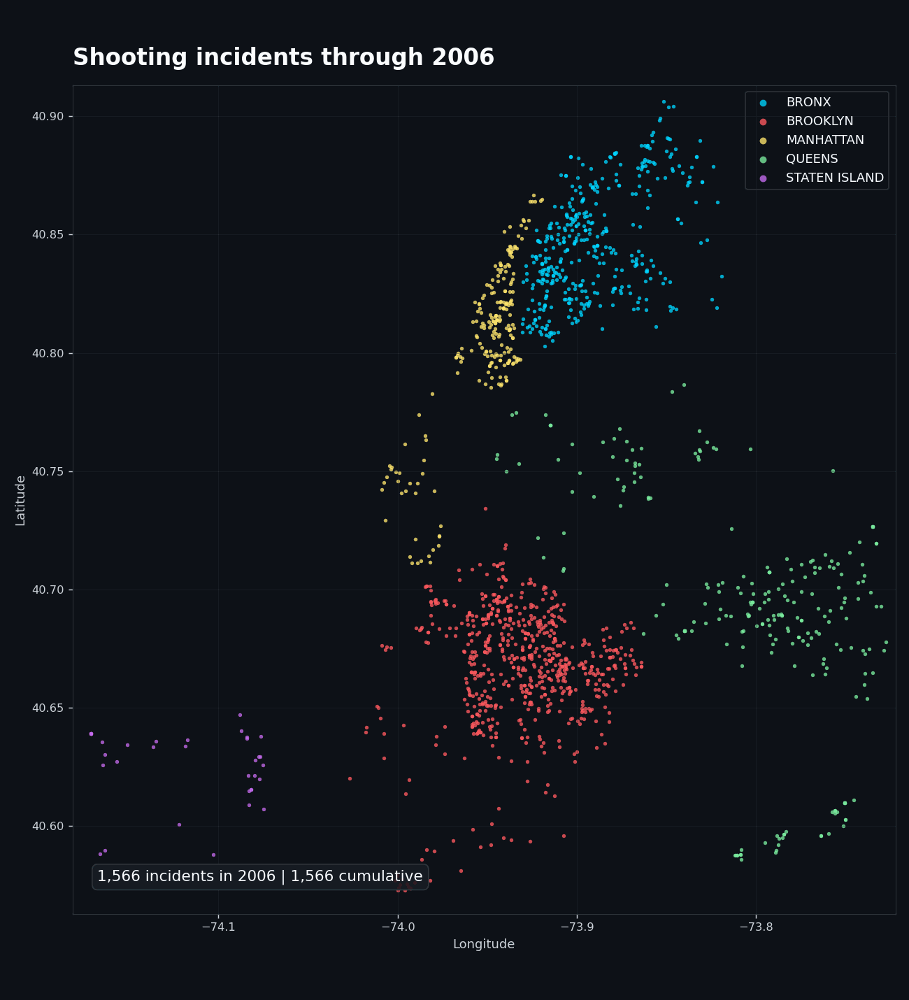

Top DBSCAN hotspot belts. The top three belts contain 61.7% of geocoded incidents.

Annualized 500m-cell change: 2023-2025 versus 2006-2011.

250m micro-hotspots that emerged or faded.

Annual activity inside the largest hotspot belts.

Annual center and cumulative center path. Center means the mean projected x/y point across incidents.

Year-by-year animation of the annual and cumulative shooting center.

Clean annual-center movement only: no fixed start/end anchor, no cumulative center.Open the borough-wise interactive center explorer with borough buttons and a clickable year slider.

Year-by-year animation of incidents and cumulative geography.